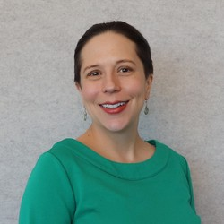
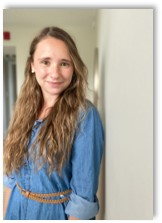
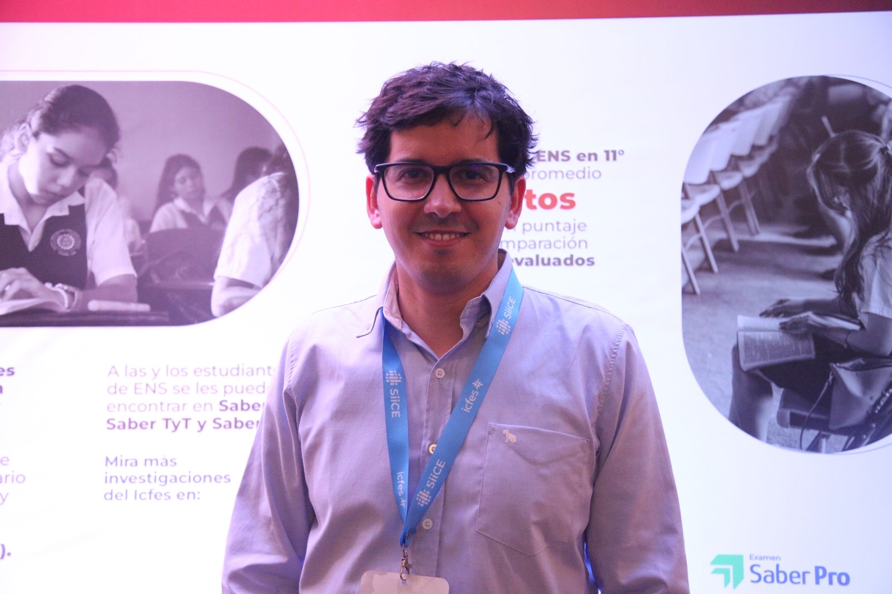
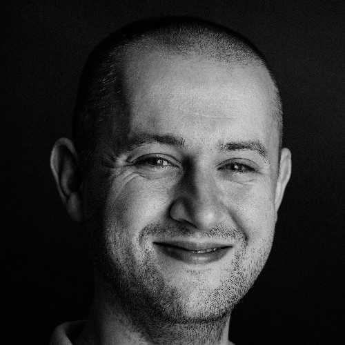
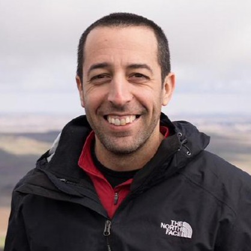

Workshops
Lucy D’Agostino McGowan

Biography
Lucy D’Agostino McGowan is an assistant professor in the Department of Statistical Sciences at Wake Forest University. She received her PhD in Biostatistics from Vanderbilt University and completed her postdoctoral training at Johns Hopkins University Bloomberg School of Public Health. Her research focuses on analytic design theory, statistical communication, causal inference, and data science pedagogy.
Causal Inference in R
Abstract
This workshop will use the NHANES Epidemiologic Follow-up Study (NHEFS) data. In this workshop, we’ll teach the essential elements of answering causal questions in R through causal diagrams, and causal modeling techniques such as propensity scores and inverse probability weighting.
Dr. McGowan on the Web
Dr. McGowan can be found blogging at livefreeordichotomize.com, on Twitter @LucyStats, and podcasting on the American Journal of Epidemiology partner podcast, Casual Inference.
Joy Payton

Biography
Joy Payton is the Supervisor of Data Education at the Children’s Hospital of Philadelphia, where her goal is to make every scientist a data scientist. She has earned a Masters degree in Data Science from the City University of New York (CUNY), an Information Systems Security certificate from Penn State University, and her undergraduate degree at Agnes Scott College (Go Scotties!). She is a Google Cloud Certified Associate Cloud Engineer and an AWS Certified Cloud Practitioner.
Google BigQuery: First Steps in R
Abstract
In this hands-on workshop, you’ll use the free tier of Google Cloud Platform to work with large public datasets in Google’s cloud data warehousing solution, BigQuery. We’ll cover topics including:
Brief overview of cloud solutions and why they matter in medicine
How to sign up for services for free for your own learning
Practicing SQL queries in BigQuery
Using R and BigQuery together
You’ll leave this workshop with the beginnings of a data analysis of a large public dataset, a Google Cloud account that will allow you to continue learning on your own, and a newfound confidence in SQL, cloud computing, and system interoperability.
Joy Payton on the Web
Joy Payton can be found on Twitter @KJoyPayton, and sharing educational resources on the Arcus Website.
Garrick Aden-Buie

Biography
Garrick Aden-Buie is an software engineer for Shiny at Posit. He received a BS from Lehigh University in Applied Mathematics, and developed smart home sensors for healthy aging in place at the University of South Florida, before becoming a data scientist at Moffit Cancer Center. At Posit, Garrick builds tools that help everyone do data science in R with RMarkdown, Quarto, and Shiny.
Next Generation Shiny Apps with {bslib}
Abstract
Learn to build Shiny apps using modern user interfaces (UI) and layouts with bslib, the next generation of Shiny UI. We’ll cover stylish and convenient dashboard layouts and components as we showcase the ways in which bslib can replace shinydashboard. We’ll also learn about exciting new ways to deploy Shiny apps with shinylive as static sites that run entirely in the user’s browser and don’t require setting up or maintaining a Shiny server.
Garrick Aden-Buie on the Web
Garrick can be found blogging at garrickadenbuie.com, on Mastodon @grrrck@fosstodon.org, and sticking things together with epoxy.
Stephan Kadauke and Will Beasley

Biographies
Stephan Kadauke is the Assistant Director of the Cell and Gene Therapy Laboratory at Children’s Hospital of Philadelphia. He received his MD degree and a PhD in Cell and Molecular Biology from the University of Pennsylvania, and did his residency in Clinical Pathology at Massachusetts General Hospital, before Fellowship in Transfusion Medicine at Harvard. At CHOP, he is responsible for the development and implementation of new technologies including CAR-T therapy in the Cell and Gene Therapy Laboratory.

Will Beasley is a Professor of Pediatrics and leads the Clinical Research Data Warehouse at the Oklahoma University Health Sciences Center. He received his PhD in quantitative psychology from University of Oklahoma. In addition to his role in BBMC and the CRDW, he provides statistical analysis and software development to research studies at OUHSC. Dr. Beasley’s areas of expertise and interest include Bayesian and Frequentist statistics, bioinformatics, simulation methods, and exploratory and graphical analysis, and reproducible research. He also has a wealth of software programming experience including SQL Server, C#, and R.
Tidying your REDCap Data with {REDCapTidieR}
Abstract
This workshop will use the {REDCap Tidier} package to get clinical data out of REDCap and prepare it for analysis. REDCap is an electronic data capture software that is widely used in the medical research community. The REDCapR package streamlines calls to the REDCap API from an R environment. One of REDCapR’s main uses is to import records from a REDCap project. This works well for simple projects, however this workflow becomes fugly when complex databases that include longitudinal structure and/or repeating instruments are used.
The REDCapTidieR package aims to make the life of analysts who deal with complex REDCap databases easier. It builds upon REDCapR to make its output tidier. Instead of one large data frame that contains all the data from your project, you get to work with a set of tidy tibbles, one for each REDCap instrument.
Stephan Kadauke and Will Beasley on the Web
Stephan can be found automating everything at CHOP, on Twitter at @StephanKadauke, and promoting reproducible medical research with R.
Will can be found working on improving REDCap Workflows, and supporting a variety of research studies at OUHSC.
Catalina Canizares-Escobar and Francisco Cardozo
 
Biography
Catalina Cañizares is a passionate data scientist and a Ph.D. candidate in Social Welfare, dedicated to using data to gain insights into emotional disorders. She has been delving deep into data analysis, especially with R. Her focus? Making data understandable and useful. She specializes in cleaning and merging data, and loves exploring data with tools like tidyverse, table1, gtsummary, and skimr, among others. She is also interested in using Machine Learning models, with the tidymodels package, to better understand emotional disorders. Plus, She is all about keeping things clear and reproducible by using tools such as Quarto.
Francisco Cardozo is a PhD canidate in prevention science and community health, he specializes in applying quantitative techniques to evaluate the efficacy of prevention programs, focusing on understanding the dynamics of how and for whom these programs are most effective. He is dedicated to developing precise measurements and analyses that inform decisions about program operations. Francisco is passionate about translating resource science into practical, real-world applications.
Biografía
Catalina Cañizares es una científica de datos apasionada y candidata Ph.D. en trabajo social. Ella se dedidca al uso de datos para obtener información sobre los trastornos emocionales. Ha estado profundizando en el análisis de datos, especialmente con R y su enfoque es hacer que los datos sean comprensibles y útiles. Se especializo en limpiar y fusionar datos, y le encanta explorar datos con herramientas como tidyverse, table1, gtsummary y skimr, entre otras. También se interesa utilizar modelos de Machine Learning, con el paquete tidymodels, para comprender mejor los trastornos emocionales.
Francisco Cardozo es un candidato a PhD en Ciencias de las Prevención y Salud Comunitaria, se especializa en aplicar técnicas cuantitativas para evaluar la eficacia de programas de prevención, centrándose en entender la dinámica de cómo y para quién estos programas son más efectivos. Está dedicado a desarrollar mediciones y análisis que informen decisiones sobre cómo operar los programas. Francisco siente pasión por traducir hallazgos científicos en aplicaciones prácticas.
Enhancing Scientific Equity: A Spanish Introduction to Using R for Biostatistical and Data Science Programming
Abstract
Despite the abundant resources available for learning R, most of these materials are primarily accessible to English speakers. This language barrier significantly restricts access for individuals who do not speak English proficiently. As a result, Spanish-speaking communities often face considerable challenges in accessing software training opportunities. This disparity leads to inequities in the distribution and utilization of scientific technologies, which is particularly concerning given the increasing importance of digital skills nowadays. To mitigate these challenges and promote inclusivity, we propose conducting a programming workshop in Spanish during the conference. This initiative aims to bridge the gap by providing Spanish-speaking participants with equal opportunities to engage with and benefit from technological advancements. By doing so, we not only enhance individual capabilities but also contribute to a more equitable distribution of educational resources in the scientific community. This workshop will equip attendees with basic skills in R. Our primary objective is to familiarize participants with RStudio and its key features for generating reproducible reports. We will guide attendees through the process of creating and managing projects in RStudio and introduce them to creating reproducible manuscripts using Quarto documents. The workshop will utilize a publicly available dataset from the CDC, which contains information on drug use and suicidal ideation among adolescents, as a practical example of using R for academic research in public health. We will explain how to use functions such as filter, mutate, summarize, and select from the tidyverse suite of packages. We will conclude by demonstrating how to use ggplot2 to create visualizations in R. By the end of the workshop, participants will have created a, reproducible document in HTML format, detailing the data cleaning steps and analysis of a significant, contemporary social issue. This presentation aims to close the gap in programming literacy among Spanish-speaking researchers and promote methods for reproducible scientific inquiry.
Promover la Equidad Científica: Una Introducción al uso de R para la programación en Bioestadística y Ciencia de Datos, en Español.
Resumen
A pesar de los abundantes recursos disponibles para aprender R, la mayoría de estos materiales son accesibles principalmente para angloparlantes. Esta barrera del idioma restringe significativamente el acceso de personas que no hablan inglés con fluidez. Como resultado, las comunidades de habla hispana a menudo enfrentan desafíos considerables para acceder a oportunidades de capacitación en software. Esta disparidad conduce a desigualdades en la distribución y utilización de las tecnologías científicas, lo que es particularmente preocupante dada la creciente importancia de las habilidades digitales en la actualidad. Para mitigar estos desafíos y promover la inclusión, proponemos realizar un taller de programación en español durante la conferencia. Esta iniciativa tiene como objetivo cerrar la brecha brindando a los participantes de habla hispana igualdad de oportunidades para interactuar y beneficiarse de los avances tecnológicos. Al hacerlo, no sólo mejoramos las capacidades individuales sino que también contribuimos a una distribución más equitativa de los recursos educativos en la comunidad científica. Este taller equipará a los asistentes con habilidades básicas en R. Nuestro objetivo principal es familiarizar a los participantes con RStudio y sus características clave para generar informes reproducibles. Guiaremos a los asistentes a través del proceso de creación y gestión de proyectos en RStudio y les presentaremos la creación de manuscritos reproducibles utilizando documentos Quarto. El taller utilizará un conjunto de datos disponible públicamente de los CDC, que contiene información sobre el uso de drogas y la ideación suicida entre adolescentes, como un ejemplo práctico del uso de R para la investigación académica en salud pública. Explicaremos cómo utilizar funciones como filtrar, mutar, resumir y seleccionar del conjunto de paquetes tidyverse. Concluiremos demostrando cómo usar ggplot2 para crear visualizaciones en R. Al final del taller, los participantes habrán creado un documento reproducible en formato HTML, detallando los pasos de limpieza de datos y el análisis de un problema social contemporáneo importante. Esta presentación tiene como objetivo cerrar la brecha en la alfabetización en programación entre los investigadores de habla hispana y promover métodos para la investigación científica reproducible.
Speakers on the Web
 Catalina Cañizares can be found leading an R club focused on Public Health and Social work here, and creating many R teaching resources which can be found here.
Catalina Cañizares can be found leading an R club focused on Public Health and Social work here, and creating many R teaching resources which can be found here.
Shannon Pileggi
Biography
Shannon Pileggi is a former statistics college professor now working in industry. I love wrangling, analyzing, and visualizing data, and helping others do the same. Shannon is a member of the leadership team for R-Ladies Global and works as the Lead Data Scientist for the Prostate Cancer Clinical Trials Consortium (PCCTCC).
Project Oriented Workflows
Abstract
In this workshop, we will establish the concept of and apply best practices to RStudio projects as a basic organizational unit of work. This includes creating robust file paths that travel well in time and space; constructing human and machine readable file names that sort nicely; differentiating workflow elements, analysis inputs, and analysis outputs in project structure; and restarting R frequently, with a blank slate. Upon completion of this workshop, you will have strategies for creating organized and reproducible data analysis projects.
Shannon Pileggi on the Web
Shannon is a former statistics professor now working in industry with the The Prostate Cancer Clinical Trials Consortium (PCCTC). I love wrangling, analyzing, and visualizing data, and helping others do the same. Shannon is a member of R-Ladies Global in Pennsylvania, and can be found blogging at Piping Hot Data, on Mastodon fosstodon.org/@PipingHotData, and carefully labeling all her data.
Mitchell O’Hara-Wild
Biography
Mitchell O’Hara-Wild is a PhD candidate at Monash University and a Data Scientist at Nectric in Clayton, Victoria, Australia. Data scientist and developer of statistical software. Mitchell is our first antipodean workshop leader, and our first to do an evening (very early morning in Australia) workshop. He is a Data scientist and rstats package developer of time series tools, and is addicted to using local IoT devices for monitoring and automating home permaculture.
Tidy Time Series
Abstract
This workshop provides a practical introduction to time series analytics and forecasting using R, utilising the tidyverse and tidy time series tools to enable analysis across many time series. Attendees will learn about commonly seen time series patterns, and how to find them with specialised time series graphics created with ggplot2. Then we will use fable to capture these patterns with statistical time series models, and produce probabilistic forecasts. Finally, participants will learn how to evaluate model performance, using accuracy statistics to choose the model which produces the most accurate forecasts. With a combination of foundational concepts and practical demonstrations, this workshop equips participants with the skills to extract meaning from time series data for informed decision-making in various domains.
Mitchell O’Hara-Wild on the Web
Mitchell is a Monash University PhD candidate with passions for time series data and data-driven permaculture. Mitchell can be found blogging at https://mitchelloharawild.com/blog.html, working as a Data Scientist at Nectric on Github, and optimizing his home garden to surpass Lisa Lendway’s crop yields .
Theo Roe and Colin Gillespie
Biographies
Theo Roe holds a 1st Class Honours MMathStat in Mathematics & Statistics from Newcastle University. He is the author of many of the Jumping Rivers courses and works with a range of clients at Jumping Rivers.

Colin Gillespie is a co-founder and CTO of Jumping Rivers. Colin has been using R since 1999. He’s the author of a number of R packages and has published the book Efficient R Programming with O’Reilly. Colin is a Senior Lecturer at Newcastle University, and completed his Ph.D. in Statistics at the University of Strathclyde.
From R to PowerPoint: Advanced PowerPoint Presentations Using {officer}
Abstract
Imagine you’re asked to recreate a beautiful, complex PowerPoint presentation using R. Despite Quarto’s wide-reaching superpowers, it only offers six measly layout options for Microsoft PowerPoint. The most complex being the simple “two columns”! So, what should I do?
The answer is not Quarto at all; it’s {officer}! In this workshop, we’ll show the process of recreating complex PowerPoint layouts, using {officer}, whilst addressing the pros and cons of abandoning Quarto.
By the end of this workshop, participants will be able to: - Understand what possibilities lie within the “Officeverse” - Why, for complex PowerPoints, {officer} is better than R Markdown and Quarto - Create complex PowerPoint presentations using {officer} - Understand how to best combine PowerPoint templates with {officer} for the optimal workflow - Understand the issues one will encounter when using {officer}
Theo Roe and Colin Gillespie on the Web
Theo can be found consulting at Jumping Rivers, blogging here and leaping over the Tyne on Saturday nights in the summertime.
Colin can be found blogging about R, sharing on Github and consulting as a member of the Royal Statistical Society.
Rami Krispin

Biography
Rami Krispin is a Senior Manager for Data Science and Engineering at Apple. He leads the data science and engineering team at Apple Finance - Services and Infra. The team focuses on translating business problems and requirements into data products using advanced statistical and machine learning models to support and help Apple leadership make data-driven decisions. Rami is also an open-source contributor and the author of Hands-On Time Series Analysis with R (Packt), several R packages for time series analysis, and machine learning applications. Rami is currently working on his next book, Applied Time Series Analysis and Forecasting, which focuses on forecasting at scale.
Setting Up a Dockerized R Development Environment with VScode
Abstract
VScode enables a seamless integration of Docker with the Dev Containers extension. This tutorial will focus on setting up a dockerized R development environment within VScode using the Dev Container extension and Docker. The tutorial will cover the following topics: - The Foundation of Docker - Rocking R on Docker - The Dev Container extension - Setting Up the R environment
The workshop is based on this tutorial: https://github.com/RamiKrispin/vscode-r
Rami Krispin on the Web
Rami can be found blogging about Docker, Time, and Forecasting on Medium. He can often be found optimizing one of his 123 repositories on Github. Rami studied Economics and Actuarial Science at the University of Michigan, and worked in Data Science in Michigan until 2018, when he gave up his snow shovel and moved to California.